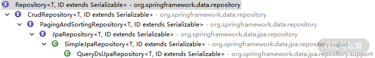
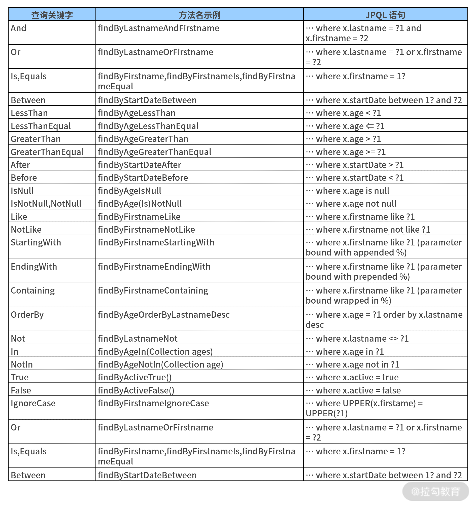
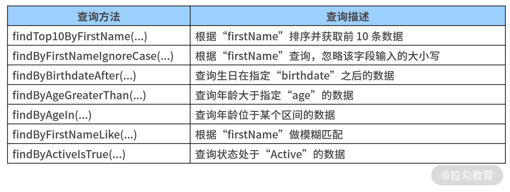
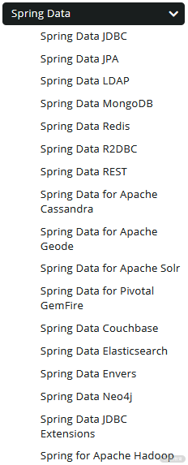

- 00 开篇词 从零开始：为什么要学习 Spring Boot？.md.html
- 01 家族生态：如何正确理解 Spring 家族的技术体系？.md.html
- 02 案例驱动：如何剖析一个 Spring Web 应用程序？.md.html
- 03 多维配置：如何使用 Spring Boot 中的配置体系？.md.html
- 04 定制配置：如何创建和管理自定义的配置信息？.md.html
- 05 自动配置：如何正确理解 Spring Boot 自动配置实现原理？.md.html
- 06 基础规范：如何理解 JDBC 关系型数据库访问规范？.md.html
- 07 数据访问：如何使用 JdbcTemplate 访问关系型数据库？.md.html
- 08 数据访问：如何剖析 JdbcTemplate 数据访问实现原理？.md.html
- 09 数据抽象：Spring Data 如何对数据访问过程进行统一抽象？.md.html
- 10 ORM 集成：如何使用 Spring Data JPA 访问关系型数据库？.md.html
- 11 服务发布：如何构建一个 RESTful 风格的 Web 服务？.md.html
- 12 服务调用：如何使用 RestTemplate 消费 RESTful 服务？.md.html
- 13 服务调用：如何正确理解 RestTemplate 远程调用实现原理？.md.html
- 14 消息驱动：如何使用 KafkaTemplate 集成 Kafka？.md.html
- 15 消息驱动：如何使用 JmsTemplate 集成 ActiveMQ？.md.html
- 16 消息驱动：如何使用 RabbitTemplate 集成 RabbitMQ？.md.html
- 17 安全架构：如何理解 Spring 安全体系的整体架构？.md.html
- 18 用户认证：如何基于 Spring Security 构建用户认证体系？.md.html
- 19 服务授权：如何基于 Spring Security 确保请求安全访问？.md.html
- 20 服务监控：如何使用 Actuator 组件实现系统监控？.md.html
- 21 指标定制：如何实现自定义度量指标和 Actuator 端点？.md.html
- 22 运行管理：如何使用 Admin Server 管理 Spring 应用程序？.md.html
- 23 数据测试：如何使用 Spring 测试数据访问层组件？.md.html
- 24 服务测试：如何使用 Spring 测试 Web 服务层组件？.md.html
- 结束语 以终为始：Spring Boot 总结和展望.md.html
09 数据抽象：Spring Data 如何对数据访问过程进行统一抽象？
事实上，JdbcTemplate 是相对偏底层的一个工具类，作为系统开发最重要的基础功能之一，数据访问层组件的开发方式在 Spring Boot 中也得到了进一步简化，并充分发挥了 Spring 家族中另一个重要成员 Spring Data 的作用。
前面我们通过两个课时介绍了 Spring 框架用于访问关系型数据库的 JdbcTemplate 模板类，今天我们将对 Spring Data 框架中所提供的数据访问方式展开讨论。
Spring Data 是 Spring 家族中专门用于数据访问的开源框架，其核心理念是对所有存储媒介支持资源配置从而实现数据访问。我们知道，数据访问需要完成领域对象与存储数据之间的映射，并对外提供访问入口，Spring Data 基于 Repository 架构模式抽象出一套实现该模式的统一数据访问方式。
Spring Data 对数据访问过程的抽象主要体现在两个方面：① 提供了一套 Repository 接口定义及实现；② 实现了各种多样化的查询支持，接下来我们分别看一下。
Repository 接口及实现
Repository 接口是 Spring Data 中对数据访问的最高层抽象，接口定义如下所示：
public interface Repository<T, ID> {
}
在以上代码中，我们看到 Repository 接口只是一个空接口，通过泛型指定了领域实体对象的类型和 ID。在 Spring Data 中，存在一大批 Repository 接口的子接口和实现类，该接口的部分类层结构如下所示：

Repository 接口的部分类层结构图
可以看到 CrudRepository 接口是对 Repository 接口的最常见扩展，添加了对领域实体的 CRUD 操作功能，具体定义如下代码所示：
public interface CrudRepository<T, ID> extends Repository<T, ID> {
<S extends T> S save(S entity);
<S extends T> Iterable<S> saveAll(Iterable<S> entities);
Optional<T> findById(ID id);
boolean existsById(ID id);
Iterable<T> findAll();
Iterable<T> findAllById(Iterable<ID> ids);
long count();
void deleteById(ID id);
void delete(T entity);
void deleteAll(Iterable<? extends T> entities);
void deleteAll();
}
这些方法都是自解释的，我们可以看到 CrudRepository 接口提供了保存单个实体、保存集合、根据 id 查找实体、根据 id 判断实体是否存在、查询所有实体、查询实体数量、根据 id 删除实体 、删除一个实体的集合以及删除所有实体等常见操作，我们具体来看下其中几个方法的实现过程。
在实现过程中，我们首先需要关注最基础的 save 方法。通过查看 CrudRepository 的类层结构，我们找到它的一个实现类 SimpleJpaRepository，这个类显然是基于 JPA 规范所实现的针对关系型数据库的数据访问类。
save 方法如下代码所示：
private final JpaEntityInformation<T, ?> entityInformation;
private final EntityManager em;
@Transactional
public <S extends T> S save(S entity) {
if (entityInformation.isNew(entity)) {
em.persist(entity);
return entity;
} else {
return em.merge(entity);
}
}
显然，上述 save 方法依赖于 JPA 规范中的 EntityManager，当它发现所传入的实体为一个新对象时，就会调用 EntityManager 的 persist 方法，反之使用该对象进行 merge。关于 JPA 规范以及 EntityManager 我们在下一课时中会详细展开。
我们接着看一下用于根据 id 查询实体的 findOne 方法，如下代码所示：
public T findOne(ID id) {
Assert.notNull(id, ID_MUST_NOT_BE_NULL);
Class<T> domainType = getDomainClass();
if (metadata == null) {
return em.find(domainType, id);
}
LockModeType type = metadata.getLockModeType();
Map<String, Object> hints = getQueryHints();
return type == null ? em.find(domainType, id, hints) : em.find(domainType, id, type, hints);
}
在执行查询过程中，findOne 方法会根据领域实体的类型调用 EntityManager 的 find 方法来查找目标对象。需要注意的是，这里也会用到一些元数据 Metadata，以及涉及改变正常 SQL 执行效果的 Hint 机制的使用。
多样化查询支持
在日常开发过程中，数据查询的操作次数要远高于数据新增、数据删除和数据修改，因此在 Spring Data 中，除了对领域对象提供默认的 CRUD 操作外，我们还需要对查询场景高度抽象。而在现实的业务场景中，最典型的查询操作是 @Query 注解和方法名衍生查询机制。
@Query 注解
我们可以通过 @Query 注解直接在代码中嵌入查询语句和条件，从而提供类似 ORM 框架所具有的强大功能。
下面就是使用 @Query 注解进行查询的典型例子：
public interface AccountRepository extends JpaRepository<Account,
Long> {
@Query("select a from Account a where a.userName = ?1")
Account findByUserName(String userName);
}
注意到这里的 @Query 注解使用的是类似 SQL 语句的语法，它能自动完成领域对象 Account 与数据库数据之间的相互映射。因我们使用的是 JpaRepository，所以这种类似 SQL 语句的语法实际上是一种 JPA 查询语言，也就是所谓的 JPQL（Java Persistence Query Language）。
JPQL 的基本语法如下所示：
SELECT 子句 FROM 子句
[WHERE 子句]
[GROUP BY 子句]
[HAVING 子句]
[ORDER BY 子句]
JPQL 语句是不是和原生的 SQL 语句非常类似？唯一的区别就是 JPQL FROM 语句后面跟的是对象，而原生 SQL 语句中对应的是数据表中的字段。
介绍完 JPQL 之后，我们再回到 @Query 注解定义，这个注解位于 org.springframework.data.jpa.repository 包中，如下所示：
package org.springframework.data.jpa.repository;
public @interface Query {
String value() default "";
String countQuery() default "";
String countProjection() default "";
boolean nativeQuery() default false;
String name() default "";
String countName() default "";
}
@Query 注解中最常用的就是 value 属性，在前面示例中 JPQL 语句有使用到 。当然，如果我们将 nativeQuery 设置为 true，那么 value 属性则需要指定具体的原生 SQL 语句。
请注意，在 Spring Data 中存在一批 @Query 注解，分别针对不同的持久化媒介。例如 MongoDB 中存在一个 @Query 注解，但该注解位于 org.springframework.data.mongodb.repository 包中，定义如下：
package org.springframework.data.mongodb.repository;
public @interface Query {
String value() default "";
String fields() default "";
boolean count() default false;
boolean exists() default false;
boolean delete() default false;
}
与面向 JPA 的 @Query 注解不同的是，MongoDB 中 @Query 注解的 value 值是一串 JSON 字符串，用于指定需要查询的对象条件，这里我们就不具体展开了。
方法名衍生查询
方法名衍生查询也是 Spring Data 的查询特色之一，通过在方法命名上直接使用查询字段和参数，Spring Data 就能自动识别相应的查询条件并组装对应的查询语句。典型的示例如下所示：
public interface AccountRepository extends JpaRepository<Account,
Long> {
List<Account> findByFirstNameAndLastName(String firstName, String
lastName);
}
在上面的例子中，通过 findByFirstNameAndLastname 这样符合普通语义的方法名，并在参数列表中按照方法名中参数的顺序和名称（即第一个参数是 fistName，第二个参数 lastName）传入相应的参数，Spring Data 就能自动组装 SQL 语句从而实现衍生查询。是不是很神奇？
而想要使用方法名实现衍生查询，我们需要对 Repository 中定义的方法名进行一定约束。
首先我们需要指定一些查询关键字，常见的关键字如下表所示：

方法名衍生查询中查询关键字列表
有了这些查询关键字后，在方法命名上我们还需要指定查询字段和一些限制性条件。例如，在前面的示例中，我们只是基于“fistName”和“lastName”这两个字段做查询。
事实上，我们可以查询的内容非常多，下表列出了更多的方法名衍生查询示例，你可以参考下。

方法名衍生查询示例
在 Spring Data 中，方法名衍生查询的功能非常强大，上表中罗列的这些也只是全部功能中的一小部分而已。
讲到这里，你可能会问一个问题：如果我们在一个 Repository 中同时指定了 @Query 注解和方法名衍生查询，那么 Spring Data 会具体执行哪一个呢？要想回答这个问题，就需要我们对查询策略有一定的了解。
在 Spring Data 中，查询策略定义在 QueryLookupStrategy 中，如下代码所示：
public interface QueryLookupStrategy {
public static enum Key {
CREATE, USE_DECLARED_QUERY, CREATE_IF_NOT_FOUND;
public static Key create(String xml) {
if (!StringUtils.hasText(xml)) {
return null;
}
return valueOf(xml.toUpperCase(Locale.US).replace("-", "_"));
}
}
RepositoryQuery resolveQuery(Method method, RepositoryMetadata metadata, ProjectionFactory factory, NamedQueries namedQueries);
}
从以上代码中，我们看到 QueryLookupStrategy 分为三种，即 CREATE、USE_DECLARED_QUERY 和 CREATE_IF_NOT_FOUND。
这里的 CREATE 策略指的是直接根据方法名创建的查询策略，也就是使用前面介绍的方法名衍生查询。
而 USE_DECLARED_QUERY 指的是声明方式，主要使用 @Query 注解，如果没有 @Query 注解系统就会抛出异常。
而最后一种 CREATE_IF_NOT_FOUND 可以理解为是 @Query 注解和方法名衍生查询两者的兼容版。请注意，Spring Data 默认使用的是 CREATE_IF_NOT_FOUND 策略，也就是说系统会先查找 @Query 注解，如果查到没有，会再去找与方法名相匹配的查询。
Spring Data 中的组件
Spring Data 支持对多种数据存储媒介进行数据访问，表现为提供了一系列默认的 Repository，包括针对关系型数据库的 JPA/JDBC Repository，针对 MongoDB、Neo4j、Redis 等 NoSQL 对应的 Repository，支持 Hadoop 的大数据访问的 Repository，甚至包括 Spring Batch 和 Spring Integration 在内的系统集成的 Repository。
在 Spring Data 的官方网站https://spring.io/projects/spring-data 中，列出了其提供的所有组件，如下图所示：

Spring Data 所提供的组件列表（来自 Spring Data 官网）
根据官网介绍，Spring Data 中的组件可以分成四大类：核心模块（Main modules）、社区模块（Community modules）、关联模块（Related modules）和正在孵化的模块（Modules in Incubation）。例如，前面介绍的 Respository 和多样化查询功能就在核心模块 Spring Data Commons 组件中。
这里，我特别想强调下的是正在孵化的模块，它目前只包含一个组件，即 Spring Data R2DBC。 R2DBC 是Reactive Relational Database Connectivity 的简写，代表响应式关系型数据库连接，相当于是响应式数据访问领域的 JDBC 规范。
小结与预告
数据访问是一切应用系统的基础，Spring Boot 作为一款集成性的开发框架，专门提供了 Spring Data 组件实现对数据访问过程进行抽象。基于 Repository 架构模式，Spring Data 为开发人员提供了一系列用于完成 CRUD 操作的工具方法，尤其是对最常用的查询操作专门进行了提炼和设计，使得开发过程更简单、高效。